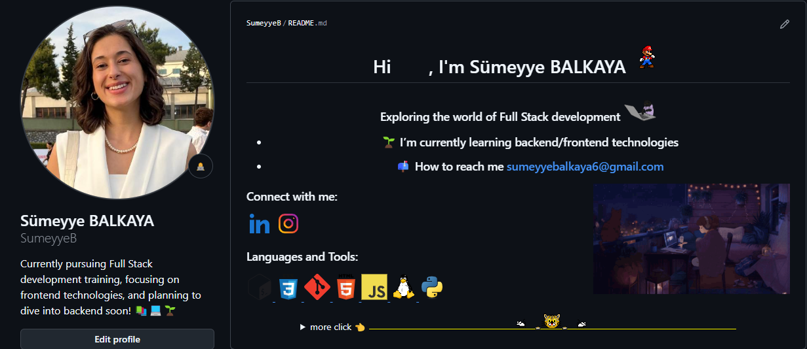

This is my page!
Sümeyye BALKAYAI am a passionate Full Stack Developer from Turkey, currently focusing on mastering frontend technologies such as HTML, CSS, JavaScript, and React. As part of my journey, I am enrolled in Clarusway, a comprehensive bootcamp that equips me with the skills to excel in the software development field. Collaborating with my team on various projects has been an enriching experience, allowing me to enhance both my technical abilities and teamwork skills.
My GitHub!
I actively use GitHub to manage my projects and track my progress, and I have integrated it seamlessly into my workflow with Visual Studio Code. On weekends, I dedicate significant time to advancing my JavaScript knowledge and revisiting essential frontend concepts to solidify my understanding. While I currently specialize in frontend development, I am gradually transitioning to backend technologies to achieve my goal of becoming a well-rounded Full Stack Developer. This journey has been both challenging and rewarding, and I am excited to continue growing in this dynamic field.